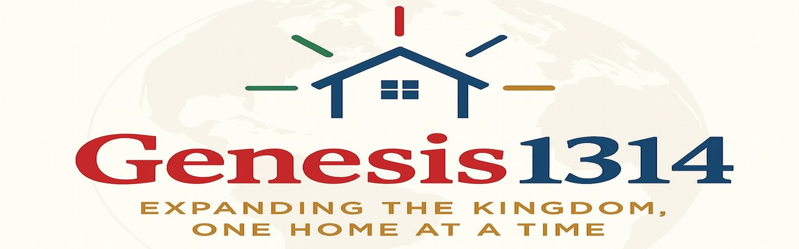
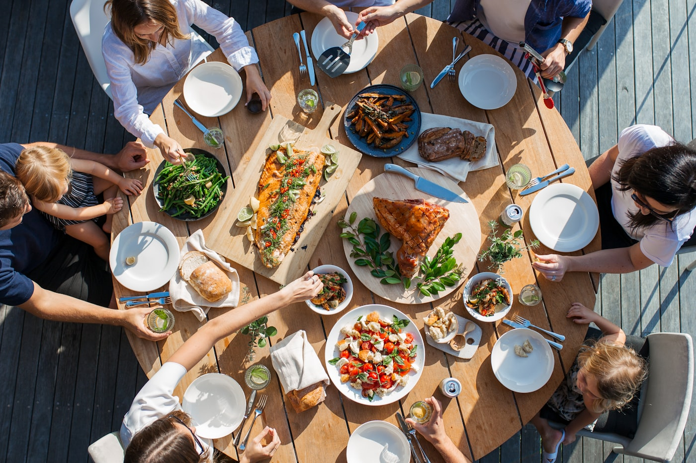
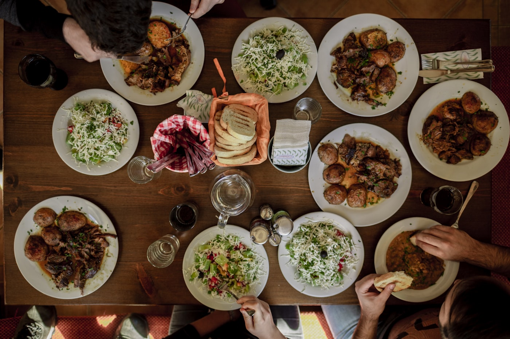

건물이 아니라 집, 신약교회의 원형 그대로.
식탁 교제로 시작해요.Not a building but a home — the New Testament church.
It starts at the table.
우리의 모든 것이 이 한 사명에서 나옵니다. 프로그램이 아니라, 한 사람이 예수를 만나고 제자로 자라 또 한 사람을 품는 것 — 그것이 교회입니다.Everything we do flows from this one mission. Not programs, but one person meeting Jesus, growing as a disciple, and carrying another — that is the church.

각 가정에서 모이는 교회. 밥 먹고, 삶을 나누고, 함께 웃는 가족.A church in each home — sharing meals, life, and joy as family.
아는 것을 늘리는 공부가 아니라, 배운 것을 삶으로 살아내는 제자 훈련.Not learning more — training to live out what you learn.
흩어져 있는 가정들이 한 회중으로 모여 함께 드리는 예배.The scattered homes gather as one congregation to worship.
예배당을 찾지 않으셔도 됩니다. 한 가정의 밥상에 앉는 것으로 시작하고, 그 자리에서 자연스럽게 함께 걷게 됩니다. 아무것도 준비하지 않으셔도 돼요.You don't need to find a sanctuary. It starts by sitting at one family's table — and from there, we simply walk together. Nothing to prepare.


풍성한 밥상 공동체로 당신을 초대합니다.You're invited to a rich table-fellowship.
치유와 상담, 배움의 자리 — 이웃으로 함께 나눕니다.Healing, counseling, and learning — shared as neighbours.
영어가 필요한 이웃과 마주 앉아 편하게 이야기.Just conversation with neighbours who need English.
부부가 다시 웃고 가정이 회복되도록 함께.So marriages smile and homes heal.
지친 마음, 상처와 아픔에서 함께 회복으로.From weariness and wounds toward healing.
서로를 다시 이해하고, 자녀를 지혜롭게.Understand each other; raise kids wisely.
진로·결정·삶의 방향, 함께 정리해요.Sort out direction and next steps, together.
어린이·청소년, 아이와 함께 오셔도 좋아요.Children & youth — bring your kids along.
믿음과 상관없이, 누구나 편하게 — 문의: info@ijiguchon.orgEveryone welcome, believer or not — info@ijiguchon.org
흩어져 모이고, 한 밥상에서 하나가 됩니다.We scatter to gather — and become one at one table.
정확한 장소는 연결 후 개별적으로 안내해 드립니다.The exact place is shared personally once you connect.
주일연합예배 설교를 영상으로 함께 나눕니다. 지금은 사도행전을 한 걸음씩 걷고 있어요.We share our Sunday messages on video — currently walking through the book of Acts.
부담 없이 먼저 인사부터. 원하실 때 한 목장으로 초대해 드릴게요.Just say hello first. When you're ready, a mokjang will welcome you.